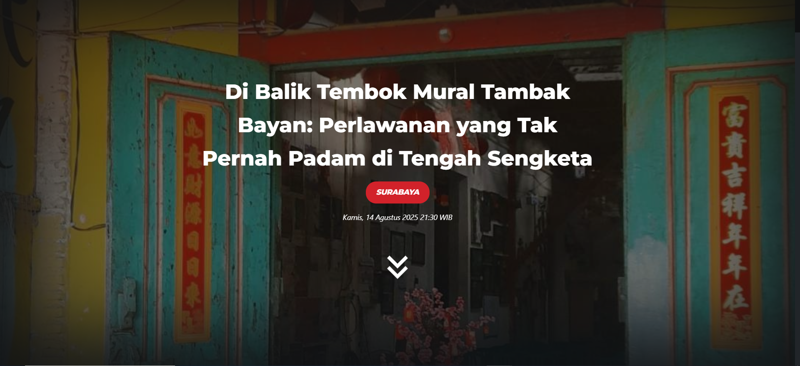

Di Balik Tembok Mural Tambak Bayan: Perlawanan yang Tak Pernah Padam di Tengah Sengketa
Reporter: Yunus Ar-Rahman l Editor: Muh Hujain
Kamis, 14 Agustus 2025
Warga Kampung Tambak Bayan berjuang mempertahankan tanah dan identitas mereka melalui mural dan kegiatan budaya di tengah sengketa lahan.
Lihat Selengkapnya